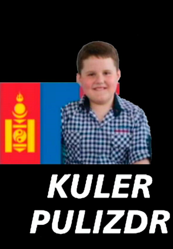

Я, Кулер Газманов, висуваю свою кандидатуру на посаду міського голови Хмельницького з єдиним щирим прагненням — об'єднати мешканців міста навколо спільної мети: зробити Хмельницький ще кращим, сучаснішим і комфортнішим для кожного з нас.
Кулер (бойлер) Газманов
Кулер Газманов — свідомий та відданий громадянин, народився в невеликому, затишному селі, де з самого дитинства здобував цінні життєві уроки. Він виріс серед щирих, доброзичливих і працьовитих людей, що сформувало його глибоке відчуття справедливості, поваги до інших та невтомне прагнення допомагати тим, хто цього потребує.
Ще змалку Кулер виявляв особливу турботу до тварин і природи. Його любов до навколишнього середовища вражала навіть дорослих — він збирав сміття на околицях, дбав про безпритульних тварин, а кожне дерево в селі знав на ім’я. Ця чутливість до вразливого і бажання робити добро стали невід’ємною частиною його характеру.
З роками Кулер Газманов старанно навчався, працював у різних сферах, здобував досвід і зростав як лідер. Він завжди був готовий взяти на себе відповідальність, знайти рішення у складній ситуації, підтримати тих, хто поруч. Його натхнення змінювати світ на краще вилилось у щиру громадську активність та прагнення впливати на життя людей не словами, а справами.
Кулер переконаний, що майбутнє громади — в єдності, турботі одне про одного та сміливості брати ініціативу у свої руки. Він підтримує здорову екологію, розвиток місцевого підприємництва, соціальну справедливість та високий рівень життя кожного громадянина.
"Я не обіцяю чудес — я обіцяю працю. Справжню, щиру, спільну працю заради Хмельницького, заради кожного з вас," — каже Кулер Газманов.